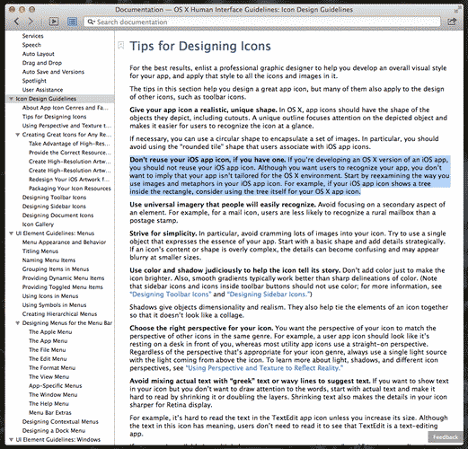

The sad state of macOS icons
Yesterday I was working on a personal project that involved building an application for an older version of macOS. While browsing the Apple's extensive documentation from circa OS X 10.8 (which I have archived just in case) I stumbled upon a very interesting paragraph that explicitly told developers they should never reuse their iOS icons for their macOS applications. Given the unique design language of the Mac's operating system the icons must be different.


It's ironic that 10 years later the complete opposite would be true. These days if you use an icon that isn't in line with the iOS guidelines your application would stick out like a sore thumb in the dock. The modern version of these guidelines now instruct developers they must use the familiar iOS rounded rectangle, but they at least have the option of slightly extending visual elements past the borders: (emphasis mine)
For example, the TextEdit icon pairs a mechanical pencil with a sheet of lined paper to suggest a utilitarian writing experience. After you create a detailed, realistic image of a tool, it often works well to let it float just above the background and extend slightly past the icon boundaries. If you do this, make sure the tool remains visually unified with the background and doesn’t overwhelm the rounded-rectangle shape.
I won't dwell into the modern macOS design language, which for me seems more like a glorified iPad these days, but along the way, and along this path of merging the mobile and desktop design languages, we lost a very important design aspect related to the icons: Their shape.

Whenever you look at the dock on macOS your brain has to interpret the sea of icons it's currently seeing. Given that they are all the exact same shape your brain has to use only their colors in order to identify them. This means you have to try harder in order to identify icon of the application you are looking for. Beforehand you could actually use the shape of the icon itself to help out on that cognitive task.

Not only did we loose the shape of the icons, we also lost their unique 3D appearance, something that was completely different from what Windows had back in the day and made the Mac unique. These days macOS seems bland, just another operating system, even Windows 11 looks more or less like it. It doesn't even stand out from its mobile, and highly paired down, variants. It doesn't feel like a professional operating system that you can get work done as it felt back in the days when Steve Jobs was proud to advertise its UNIX features.